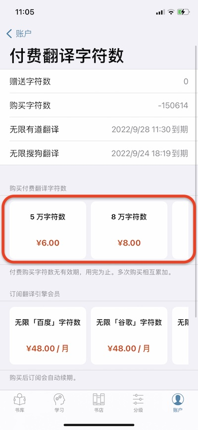
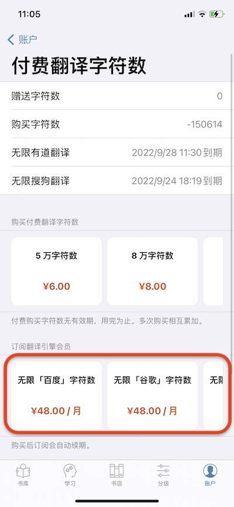
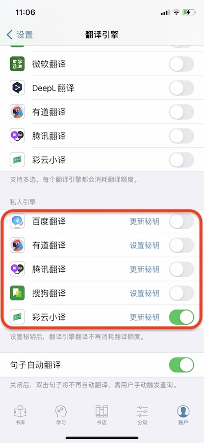

title: 如何获得翻译额度?
简介
听阅内的翻译引擎由三方提供。听阅集成了多家三方的翻译引擎。为了使用这些引擎，我们首先需要通过三方提供的网站申请成为开发者，以获取服务密钥。利用密钥我们就能调用三方提供的翻译接口进行翻译。密钥的申请都是对外开放的，任何人都可以申请，只是流程会比较繁琐。为了方便大家，我们以听阅的身份从各家申请了密钥内置于应用中，这样大家无需自己申请就能直接使用各方的翻译服务。但由于三方提供的翻译服务是按字符量收费的，听阅也需要向大家收取同等的费用。并且由于苹果税的原因，听阅的收费标准会相对较高。不过，我们也为大家提供设置密钥的功能。大家可以自己去三方引擎申请属于自己的密钥，然后在听阅里设置。
获取方式对比
当前，用户可以在听阅里直接购买翻译额度，也可以去三方网站申请密钥并购买额度。对于听阅内的购买，我们也提供了两种方式以满足不同用户的需求。一种是直接购买翻译额度，一种是订阅各引擎的会员。下面我们从价格、有效期等对这三种方式进行了对比。大家可以根据自己对翻译引擎的使用情况选择适合自己的方式。
| 特点 | 内购翻译字符数 | 订阅翻译引擎会员 | 设置私人密钥 |
|---|---|---|---|
| 支持的翻译引擎 | 百度、谷歌、搜狗、微软、DeepL、有道、腾讯、彩云 | 百度、谷歌、搜狗、微软、DeepL、有道 | 百度、有道、腾讯、搜狗、彩云 |
| 价格 | 85元/100万字符（含30%的苹果税） | 48元/月 | 百度：49元/100万字符，有道：48元/100万字符，腾讯：58元/100万字符，搜狗：40元/100万字符，彩云：20元/100万字符 * |
| 获得的翻译字符数 | 买多少有多少 | 无限字符 | 买多少有多少 |
| 购买后适用的翻译引擎 | 无限制，各家通用 | 限订阅会员对应的引擎 | 限申请密钥对应的引擎 |
| 有效期 | 无 | 1个月 | 由三方引擎决定 |
| 是否限听阅会员可用 | 否 | 否 | 是 |
* 价格以各三方网站的最新价格为准。
如何购买翻译字符数
打开听阅App，选择账户->付费翻译字符数。在“购买付费翻译字符数”部分，我们提供了5万、8万、18万、40万、80万、160万等额度供大家选择。大家可按需购买。

如何订阅翻译引擎会员
打开听阅App，选择账户->付费翻译字符数。在“订阅翻译引擎会员”部分，我们提供了百度、谷歌、DeepL、微软、搜狗以及有道的翻译引擎会员。大家可选择自己喜欢的翻译引擎并购买对应的会员。

如何设置私人密钥
当前，我们支持设置百度、有道、腾讯、搜狗以及彩云小译的私人密钥。打开听阅，选择账户->设置->管理翻译引擎，然后在“私人引擎”部分，点按对应翻译引擎的“设置密钥”按钮，即可设置。

以下是我们整理的各家密钥的申请文档，供大家参考。